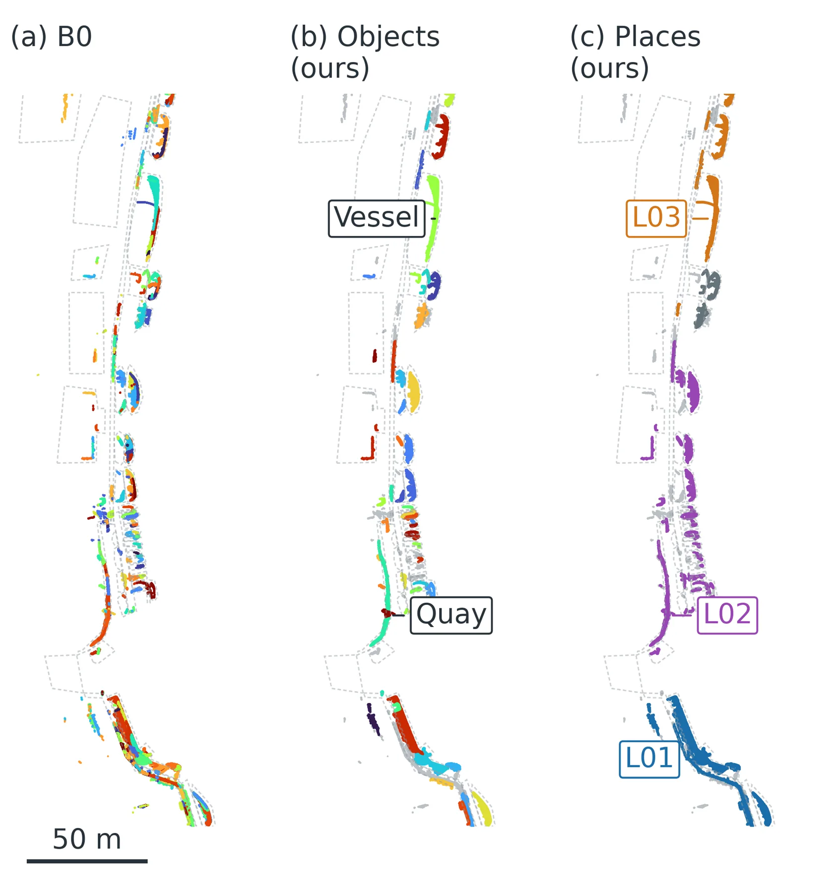
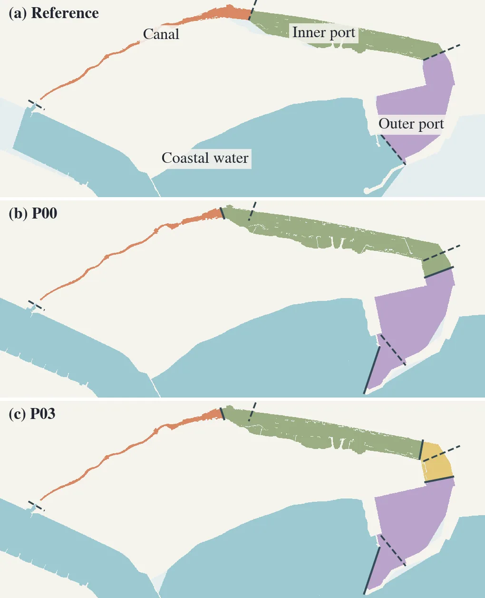
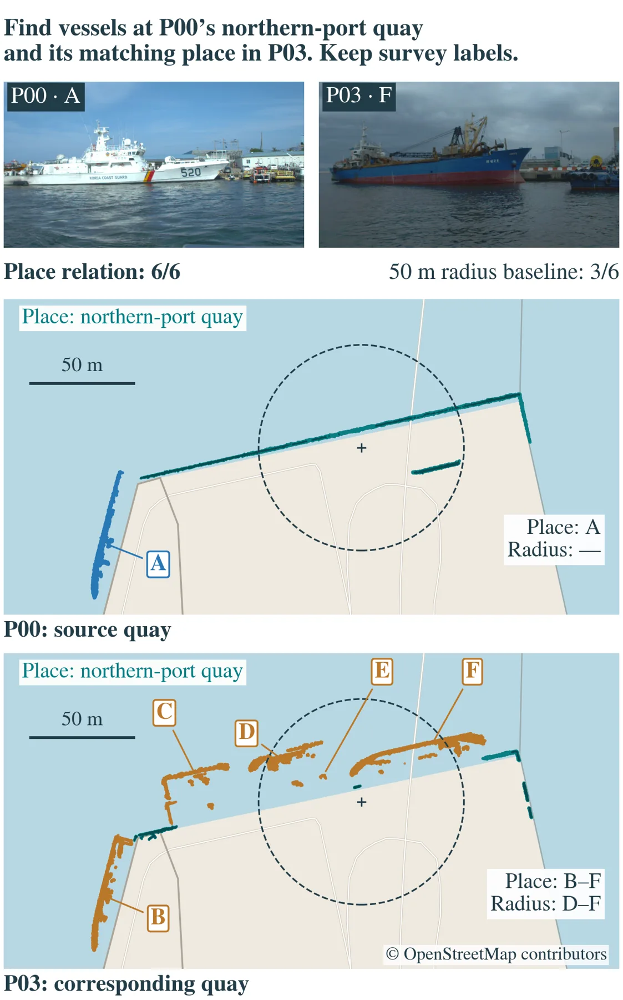

海上持久米制语义场景记忆：从开放词表 3D 场景图出发
Persistent Metric-Semantic Maritime Scene Memory from Open-Vocabulary 3D Scene Graphs
这是一篇“迁移诊断 + 保守适配”的论文：先证明开放词表 3DSG 的语义能迁移（112/139 物体有几何支撑、其中 99.1% 类别正确），再证明身份与高层组织不能直接迁移（每艘船平均 2.3 个节点）。适配只做后处理：几何-语义保守合并把节点/船从 2.306 降到 1.861，加多视图 VLM 再降到 1.222；宏观区域与参考分区 ARI 0.965、IoU 0.812；检索 F1 从半径法的 0.487 提到 0.787。它对我们最有价值的是“哪些层能复用、哪些层必须重写”的分层结论。
Nodes per vessel (north bank)
Cross-traversal macro-region ARI
Single-survey retrieval F1
作者、单位与技术谱系 · Research context
作者与单位
研究脉络
- OpenGraph方法基座关系：感知与增量建图直接使用 OpenGraph 的发布实现，本篇不改其内部，只在其累积表示上做后处理；B0 基线就是它。[论文 §III-B]
- Pohang Canal Dataset 与 OSM 先验评测与先验来源关系：重复趟次评测用 Pohang 的 P00/P03，宏观区域的陆地/水域拓扑来自 OpenStreetMap，二者都不是本篇提出的表示。[论文 §IV-A、§V-C]
合作网络
- NTNU 内部共同署名NTNU 机械与工业工程系（ Christensen / Zimmermann / Steinert / Kelasidi） → NTNU 海上作业相关课题关系：共同署名[论文首页脚注]
- Maritime3DSG ↔ OpenGraph本文的适配表示 → OpenGraph [10]关系：技术依赖[论文 §III-B、Table I]
作者与单位来自首页脚注；OpenGraph、Pohang、OSM 的关系来自正文引用，未推断导师或实验室隶属。
方法本质拆解 · What actually changed
是不是微调？
完全不训练：OpenGraph 用官方发布配置与数据集适配器，C050 与地点/区域构造都是确定性几何规则，VLM 推理是零样本提示（GPT-6 Astra），没有任何权重更新。语义归一化用一个只看文本的 LLM 把累积文本映射到固定本体，也不接触标注。
有没有额外约束？
约束全是硬阈值：合并要求 0.5 m 包围盒间距、0.8 语义相似度、双向支撑 0.7/0.1（共观测 0.9）与 1.2 倍尺寸膨胀上限；水面证据要求 2 m 栅格、≥3 次水票且占比 ≥0.8；区域切割要求 75% 水面与障碍接触、宽度比 ≥1.8；地点对应要求 3 m 内 ≥50 体素、双向覆盖 ≥20%、互最佳且分数领先 0.1。另有输入约束：位姿与标定、OSM 先验、以及两次趟次共享世界坐标系。
推理/后端到底做了什么？
后端是“后处理管线”而不是新的 SLAM：先跑 OpenGraph 得到持久片段，再依次做保守合并、候选分组投影与两轮 VLM 判断（提议 + 对比验证）、地点归组、宏观区域构造与地点-区域关联。每次 VLM 调用最多看 18 个候选片段、3 个视图（地点阶段 6 个视图），并带几何诊断。没有全局优化、没有回环，也没有跨趟次的地图对齐。
方法本质是什么？
本质是承认“感知能迁移、表示不能”，于是只在累积表示这一层做低成本修补：几何-语义务先把明显重复的片段并起来，再用接地到几何的 VLM 判断把“同一物体的多片”收成一个实体，最后用固定设施把实体收成地点、用地图先验加水面证据收成区域。它没有做的是改进底层感知或建图，所以碎片化的根因（大物体、有限视角、能见度差）仍然存在，只是被后处理吸收了一部分。
输入带位姿的 RGB-LiDAR 观测与 OSM 先验，改变的是 3DSG 的累积表示层，动作是几何-语义保守合并加接地多视图 VLM 分组再构造地点/区域，直接效果是每船节点数从 2.306 降到 1.222 且检索 F1 提升到 0.787。

桥接价值Bridge
桥接价值
这篇把“场景图能不能跨域直接用”拆成三层分别回答：物体级语义能迁移（112/139 有几何支撑，99.1% 类别一致），物理身份不能（每船 2.306 个节点），高层空间组织也不能（陆地式 road/lane 结构不表达航道分区）。对做长期地图记忆的团队来说，这比又一个新 3DSG 方法更有用：它明确了哪些模块可以复用现成实现，哪些必须重写。
方法与模块Method
方法摘要
保留 OpenGraph 的感知与增量建图，只改累积表示。第一步是保守合并 C050：两片段的 3D 包围盒间距 ≤0.5 m、语义余弦相似度 ≥0.8、双向几何支撑 o0.5≥0.7/0.1（共观测时源侧提到 0.9），并拒绝水平范围膨胀超过 1.2 倍加 0.25 m 的合并。第二步用几何锚定的多视图 VLM 推理：把候选片段投影回 RGB 观测，带编号叠加后让 VLM（GPT-6 Astra）先提议同一物理对象的分组，再用同一证据做对比验证，只接受有支撑且几何一致的组。第三步在同一层级上做地点推理：给 VLM 重叠空间窗，问“去掉当前船只与活动后还剩下什么固定设施”，据此把实体与观测归为局部地点；宏观区域则由 OSM 先验加船载水面/结构证据（2 m 栅格、水票 ≥3 且占比 ≥0.8）独立构造。
可迁移模块
可复用的是“证据级合并判据”：双向几何支撑 o_d(X,Y) 加语义相似度加尺寸膨胀上限，这套规则不依赖海上先验，换到停车场、港口堆场、室内大空间都能直接用。第二个可迁移模块是“把候选几何投回观测再问 VLM”的接地方式：与直接给 VLM 一张 RGB 或一段文本描述相比，带编号的几何叠加能让它判断“这是同一个物体还是两个”，这正是我们在做地图实体去重时缺的一步。第三个可迁移的是跨趟次地点对应：只允许固定支撑（0.5 m 体素、3 m 距离内 ≥50 体素、双向覆盖 ≥20%）作正证据，可动占据物与语义描述都不算，这条纪律值得照搬。

证据Evidence
关键证据与数字
迁移诊断：MUT 上 112/139 离散物体（80.6%）有几何支撑，其中 111/112（99.1%）类别一致；扩展结构只有 46/83（55.4%）有支撑、15/46（32.6%）类别一致。去碎片：北岸每艘船节点数 2.306→1.861（C050）→1.222（+VLM），南岸 1.957→1.413→1.298；碎片化船只数北岸 20→17→8、南岸 25→11，南岸还多恢复 1 艘（46→47）。宏观区域：P00 四区、P03 五区，跨趟次 ARI 0.965，对参考分区 IoU 0.812/0.810（覆盖参考域 78.1%/78.0%）；对照中 OSM 单独 ARI 1.000（构造上必然重复），仅船载证据 0.907，加雷达反而降到 0.623。检索：单趟 F1 0.787、精确集 11/20，双趟 F1 0.810、2/4，明显高于位置半径（0.487/0.378）与词法半径（0.387/0.150）。
边界与下一步Limits & Next Step
边界与风险
作者自己划的边界很清楚：宏观区域是“先验辅助”的，OSM 提供大尺度拓扑，船载证据只补可观测部分，所以换到没有可靠地图先验的水域结论会退化；评测只覆盖两个数据集（MUT 单序列 + Pohang 两次趟次），地点对应只在 10 个匹配区域上验证，衡量的是可重复性而不是边界精度。风险还有两处：多视图 VLM 推理依赖 GPT-6 Astra 这类闭源模型，成本与可复现性未报告；跨趟次比较假设两次都在同一世界坐标系，实际部署中的定位漂移会直接破坏 3 m 体素对应。
下一步实验
第一步该做的是把 C050 的双向支撑判据搬到我们自己的地图上，只用几何+语义做一遍保守合并，量化“节点/实体”比例变化，确认这条规则在非海上场景也有收益。第二步做一个消融：把 VLM 分组换成纯几何聚类（同样的候选与阈值），看 1.222 这个数字里有多少来自 VLM、多少来自 C050，原文没有把这两级拆开做受控对比。第三步把地点对应的判据放到有时间间隔的多趟数据上，测量定位误差增长对 reciprocal 对应率的影响，这决定了它能否用于长期记忆。



